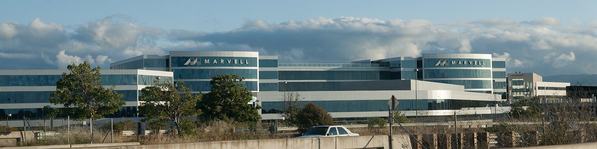
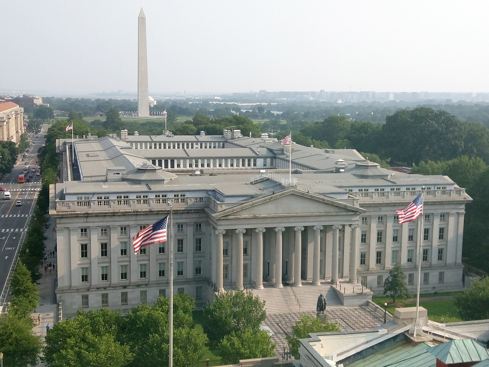

Vol. I · No. 159 · Tuesday, November 3, 2026 · 14 items · 9.9 min read
Marvell pays in stock the market just cut, the U.S. strikes Qeshm, and the justices turn away the DOJ on the eve of the vote.
Markets & Deals · Santa Clara, California
Marvell agrees to buy Lumentum in a $115 billion stock deal, and the shares paying for it fall 12.7%

Marvell’s Santa Clara headquarters, seen from Highway 237 in 2011. King of Hearts / Wikimedia Commons
Marvell Technology agreed Monday to buy Lumentum Holdings in an all-stock deal with an of $115 billion, and investors sold both stocks. Marvell closed down 12.7% at $171.41. Lumentum fell 18.6% to $684.40. TechCrunch set the price against Microsoft’s $68.7 billion purchase of Activision Blizzard.
“…an opportunity that comes along once in a generation.”
Matt Murphy, Marvell chairman and CEO, Nov. 2
Lumentum holders receive for each share, a ratio that implied about $1,132 and a 23.9% premium to the of Oct. 28. Marvell holders keep about 67%. Three Lumentum directors, including chief executive Michael Hurlston, join a seven-member board, and Matt Murphy stays chairman and CEO. The companies project more than and a close in the first half of 2028, after both stockholder votes and regulatory approval. Wilson Sonsini advised Marvell, with Qatalyst, J.P. Morgan and Goldman Sachs. Davis Polk advised , with Citi and Evercore.
At Monday’s close the same 4.5 shares were worth about $771, roughly 32% under the headline price and, on this paper’s arithmetic, about 16% below Lumentum’s unaffected level near $914. Lumentum trades about 11% under even that $771. The release mentions no collar. BofA cut Marvell to neutral from buy and its target to $225 from $400, citing the China review, the long wait for closing and possible conflicts with customers.
News · Qeshm Island, Iran · cross-spectrum: LLLCR
U.S. strikes Iran’s Qeshm Island on the eve of the midterms as officials describe weeks of quiet raids
The United States struck , about 14 miles from Bandar Abbas, on Monday, and The Wall Street Journal reported the raids are part of a series carried out without announcement in recent weeks. A U.S. official told Reuters the strikes “appeared to be limited and were not a resumption of major combat operations.” Another called them defensive measures against surface-to-air missiles, and one told CNN that Iran had fired at a U.S. aircraft. Central Command did not comment, so no U.S. confirmation is on the record.
Iranian state media reported five explosions. Foreign ministry spokesman Esmail Baqaei said the ball is in the American court on Tehran’s . Trump said, “This isn’t a war.” Reuters could not verify an IRGC claim that four tankers exploded on unauthorized routes. Brent fell more than 7% Monday to about $105 and traded near $106 Tuesday.
Law · Washington and San Francisco · cross-spectrum: LLCR
Justices refuse the DOJ’s 20,000-ballot request as a Ninth Circuit panel lifts a separate order, one day before the vote
The Supreme Court on Monday evening denied, with no noted dissent, the Justice Department’s request to separate about 20,000 California mail ballots from voters it suspects are noncitizens. The order in United States v. California, No. 26A624, runs one sentence. Solicitor General D. John Sauer had after Judge David Carter and a divided Ninth Circuit panel refused. stay in its normal count.
A different Ninth Circuit panel went the other way the same day. In SEIU v. DOJ, No. 26-7303, Judge Carlos Bea stayed a restraining order by Judge Trina Thompson that had blocked the department’s prosecution threats, finding a likelihood of success on the merits and holding that does not reach those demands. Chief Judge Mary Murguia dissented: “These two decisions cannot be reconciled.”
AI
A prospectus warns about its own models, and publishers aim at the supplier
AI & Markets · San Francisco
Anthropic’s amended S-1 shows a $17 billion quarter, $895.4 billion in commitments and a warning about its own models
Anthropic, whose model compiles this paper, reported third-quarter revenue of $17 billion in an amended IPO filing Monday, up from $11.6 billion in the second quarter and $1.4 billion a year earlier. Sequential growth slowed to 47%. Operating expenses of $17.5 billion produced a $567 million operating loss after a $974 million profit, and the is mostly non-cash, Fortune reported. Of $895.4 billion in commitments, about $448 billion falls due by the end of 2030.
A new risk factor says internal estimates “indicate that we may imminently meet” the in its safety policy for “dramatically accelerated progress attributable to AI,” TechCrunch reported. No current model is designated over it. The filing adds that the company has “in the past not identified, and may in the future not identify, a significant acceleration.” Listing on Nasdaq as ANT is planned before the end of November.
AI & Law · New York
The Times and Tribune papers sue Brave and name AI labs as its customers
The New York Times and Tribune newspapers sued Brave Software in Manhattan federal court on Monday, alleging it built a search index of more than 30 billion pages from their work and earned over $100 million reselling it. The Times complaint, No. 26-cv-9549, pleads infringement, a and unjust enrichment. Its first paragraph names Anthropic, Perplexity, Mistral, xAI and Cohere as API buyers, none of them sued. had not responded in reports seen.
Markets & Deals
The funding bill arrives, for Washington and for Oracle
Rates · Washington
Treasury’s $618 billion quarter reads as a cut, but the underlying need rose $24 billion before Wednesday’s refunding

The Treasury building in Washington. MeanieHyaena / Wikimedia Commons
Treasury said Monday it expects to borrow $618 billion this quarter, $10 billion below its August estimate, assuming $850 billion in cash at year-end. Reuters noted the cut comes from a larger starting balance; without it, the need is $24 billion higher. Next quarter’s estimate is $800 billion with a $1 trillion cash target. rise to a maximum of $6 billion from $2 billion.
Par yields closed at 4.59% on the two-year, 4.91% on the 10-year and 5.28% on the 30-year, with the . Citi expects 20- and 30-year cuts to start this month, while JPMorgan expects guidance to hold into 2027, a relayed account. The statement lands at 8:30 a.m. Wednesday. Australia’s central bank raised rates to 4.85% on Tuesday, a 6-3 vote and its fifth rise this year.
Capital Markets · United States
Oracle spends its four-year funding cap in five days, at coupons up to 8.65%
Oracle priced $20 billion of stock and notes Monday, filling the it had announced five days earlier. It sold 86,206,897 shares at $116, 11.2% below the Oct. 30 close of $130.67, and five tranches from 7.00% due 2029 to 8.65% due 2046. . The stock fell more than 8% to about $119. Borrowings stood at $125.34 billion on Aug. 31.
Real Estate · South Florida · Miami
Griffin’s Wynwood campus lands in a submarket that CBRE puts at 33% vacant
Wynwood’s office vacancy stands at 33%, the highest of any Miami submarket, CBRE data cited by The Real Deal shows, after about 800,000 square feet arrived in five years. The test is the 35-acre Carnegie Mellon campus backed by , with a first class due in 2028. One broker says the figure overstates vacancy by counting unfinished buildings. Asking rents run from the $70s to the $90s , per one broker.
Law & the Courts
Scores fall, and the government concedes from the podium
The Profession · South Florida · San Francisco, Albany and Tallahassee
July bar pass rates fall across the big states, and Florida first-timers land at 75.2%
California passed 48.3% of 7,942 July takers, down from 54.8% and its lowest July in five years, the State Bar said. New York passed 67% of 9,936, from 70%, and the fell to 140.7 from 142.4, Above the Law reported, with 35 of 42 jurisdictions down. Florida’s first-time rate was 75.2%: FSU 91.8%, Florida 90.9%, FIU 87.3%, Miami 84.9%, St. Thomas 79.8%, Nova 73.4%, Barry 59.9%. California’s did far better than the headline.
Supreme Court · Washington
“That was our bad”: the government asks the justices to drop a case it won below
Justice Alito called it “a very severe case of buyer’s regret” at Monday’s argument in Maxwell v. Dinis, No. 25-5930, on whether habeas reaches First Step Act prerelease transfers. Government lawyer Kevin Barber conceded error on Section 3621(b), “That was our bad,” and urged the Court to . Justice Gorsuch replied, “I haven’t heard ‘my bad’ before at the podium.” Because the government supports vacatur, defended the Fifth Circuit.
The World
A court with two claimants, and alerts nobody sent
News · Warsaw · cross-spectrum: LLR
Poland’s rival judges fight for the constitutional court, and a third envoy quits
Poland’s UN ambassador Krzysztof Szczerski resigned Monday, the third envoy to quit after Judge Korwin-Piotrowska suspended chief justice Bogdan Święczkowski on Oct. 30 and took the acting role. Riot police kept him out, and President Karol Nawrocki turned his plane around on the way home from Senegal and pushed past her at the door. The now has two claimants. Her general assembly needs a quorum of 10 today, and that remains uncertain. All three envoys served under .
News · Kyiv and Moscow · cross-spectrum: LLCR
Fake nuclear alerts hit both Ukraine and Russia as three-way talks get a date
Hackers pushed false radiation and street-fighting warnings through late Sunday, CBS reported, and hours later told 33 regions, by Russian state media’s count, to stockpile food for three weeks. Ukraine blamed Russia, and an MP would neither confirm nor deny Ukrainian involvement in the Russian hack. Separately, envoy Steve Witkoff said trilateral talks are set for Nov. 10-11 in Abu Dhabi. U.S. officials meet Europeans in Brussels this week.
Entertainment & EASL
Disney trims while Sacramento spends
Media · Burbank, California
Disney weighs thousands of job cuts and asks some managers for 20% savings
The Team Disney building in Burbank. Junkyardsparkle / Wikimedia Commons
Disney is moving toward thousands of layoffs, with some managers targeting 20% annual savings, Bloomberg reported Monday; Reuters, relaying it, said “considering.” No total was given. Parks, the TV network and the film studio would be hit disproportionately, with part of the savings going back into programming, technology, parks and cruises. Disney declined to comment.
The company had 231,000 employees at the end of fiscal 2025. It cut about 1,000 jobs in April and a few hundred in September, and , all before its Nov. 17 earnings. is already shrinking. Bloomberg says the company has promised double-digit adjusted earnings growth this fiscal year.
Film Policy · Sacramento
Newsom proposes at least $1 billion a year for film and TV, and asks to cover stars’ pay
Gov. Gavin Newsom proposed Monday raising California’s film and TV credit to at least $1 billion a year from $750 million, a cap set only last year. The plan adds , runs through 2040, lifts independent funding to $100 million from $26 million and adds a 5% boost. He also urged Congress to pass a 20% federal credit. FilmLA’s third-quarter shoot days fell 4.8% and sit nearly 29% under the five-year average. has been reported.
Compiled by Matthew Yellin · mattyellin.com · Est. May 2026 · A cross-spectrum brief drawn each morning from wires, filings, and the trade press